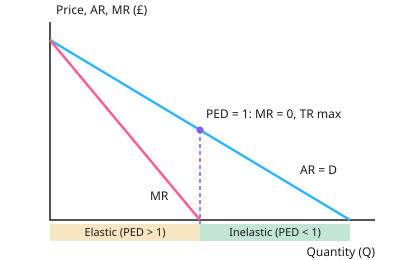

A-level Economics Year 13 · Topic 6
Revenue, costs, profit and efficiency
This topic builds the theory of the firm: revenue, costs, profit and efficiency.
We will link marginal revenue to elasticity, analyse short and long run costs, and identify normal and supernormal profit.
Then we compare productive, allocative, static and dynamic efficiency, and explain X inefficiency.
- 6 subtopics
- 222 questions
- Free: 6.1 notes and 10 questions
In this topic
- 6.1Total, average and marginal revenue and the link to price elasticity of demandFree below · 19 questions
- 6.2Short-run production and costs: productivity, diminishing returns, fixed and variable, average and marginal costsOpen in Full Marks · 43 questions
- 6.3Long-run costs: returns to scale, economies and diseconomies of scale, LRAC and minimum efficient scaleOpen in Full Marks · 48 questions
- 6.4Normal and supernormal profit, losses, break-even, shutdown and profit maximisation (MR=MC)Open in Full Marks · 52 questions
- 6.5Productive and allocative efficiencyOpen in Full Marks · 27 questions
- 6.6Dynamic efficiency, static efficiency and X-inefficiencyOpen in Full Marks · 33 questions
6.1 · Free notes
Total, average and marginal revenue and the link to price elasticity of demand

Key points
- Total revenue (TR) = price × quantity sold (P × Q). It is the money a firm receives from sales, measured in £.
- Average revenue (AR) = TR ÷ Q, which always equals price. The AR curve is therefore the firm's demand curve.
- Marginal revenue (MR) = ΔTR ÷ ΔQ. It is the extra revenue from selling one more unit.
- A price-taker (perfect competition) faces perfectly elastic demand at the market price. So AR = MR = P (a horizontal line) and TR is a straight line through the origin.
- A price-maker (monopoly, oligopoly, monopolistic competition) faces a downward-sloping AR curve. It must cut price on all units to sell more, so MR < AR and MR lies below AR.
- For a linear demand curve P = a − bQ, TR = aQ − bQ² and MR = a − 2bQ. MR has the same price intercept but twice the slope, so it cuts the quantity axis at half the output where AR does.
- Elastic demand (PED > 1): MR > 0, so TR rises as price falls. Unit elastic (PED = 1): MR = 0 and TR is at its maximum. Inelastic (PED < 1): MR < 0, so TR falls as output rises and price falls.
- PED = %ΔQd ÷ %ΔP. The sign is negative for normal goods, so compare absolute values. The link to revenue is MR = P(1 − 1/|PED|).
- Revenue decisions: if demand is elastic, cutting price raises TR. If demand is inelastic, raising price raises TR. A profit-maximiser compares MR with MC, not just TR.
- Because MC is positive, a profit-maximising firm needs MR > 0. It therefore operates on the elastic section of its demand curve.
- Along a straight-line demand curve the slope is constant but PED changes: elastic at high prices, inelastic at low prices. Do not confuse slope with elasticity.
- Diagram tips: for a price-maker, TR is an inverted U that peaks where MR = 0. Label both axes (£ and Q) and show MR cutting the Q axis at half AR's intercept.
In more detail
- Worked MR from demand: P = 100 − 4Q → TR = 100Q − 4Q² and MR = 100 − 8Q. TR peaks where MR = 0, at Q = 12.5 and P = £50, which is where PED = −1.
- Worked MR from a table: 10 units at £20 (TR £200) and 11 units at £19 (TR £209) → MR of the 11th unit = £9, well below the price.
- Revenue decisions: a theatre with elastic demand for weekday matinees cuts prices to fill seats, but keeps Saturday-night prices high, where demand is inelastic.
- Formula link: MR = P × (1 − 1/|PED|). At P = £20 and PED = −2, MR = 20 × 0.5 = £10.
Practice
Total, average and marginal revenue and the link to price elasticity of demand: 10 questions
Pick an answer to check it, or open the answer for the explanation.
1. A firm sells 50 units at £10 each. To sell 60 units it must cut the price to £9 on all units. What is the marginal revenue of the extra 10 units?
- £4
- £0.40
- £9
- £40
Show answer
A: £4. TR rises from £500 to £540, so ΔTR = £40. MR = ΔTR ÷ ΔQ = 40 ÷ 10 = £4 per extra unit. £9 is the new price, not MR.
2. For a firm in perfect competition, which statement is correct?
- TR falls as output rises
- MR is zero at the profit-maximising output
- AR = MR = price at every output
- MR is below AR at every output
Show answer
C: AR = MR = price at every output. A price-taker sells every extra unit at the same market price, so AR = MR = P and TR rises in proportion to output.
3. A monopolist faces the demand curve P = 100 − 2Q (P in £). What is its marginal revenue at an output of 15 units?
- £20
- £55
- £70
- £40
Show answer
D: £40. TR = 100Q − 2Q², so MR = 100 − 4Q = 100 − 60 = £40. £70 is the price (AR) at Q = 15, not MR.
4. Demand for a product has a PED of −2.5. If the firm cuts its price, total revenue will:
- rise, because the % rise in quantity exceeds the % fall in price
- rise only if marginal cost falls
- stay the same
- fall, because price is lower
Show answer
A: rise, because the % rise in quantity exceeds the % fall in price. With elastic demand (|PED| > 1), the % rise in quantity demanded is greater than the % price fall, so TR rises.
5. At the output where MR = 0 for a firm facing a downward-sloping demand curve, which statement is true?
- TR is at its maximum and PED = 1
- Profit is maximised and demand is inelastic
- AR is zero and TR is zero
- TR is at its minimum and demand is elastic
Show answer
A: TR is at its maximum and PED = 1. When MR = 0, extra sales add no revenue, so TR is at its peak. This is the point of unit elasticity on a linear demand curve.
6. On a straight-line demand curve, a firm produces where MR is negative. Demand at this output is:
- inelastic, and TR would rise if price rose
- inelastic, and TR would rise if price fell
- elastic, and TR would rise if price fell
- unit elastic, and TR is maximised
Show answer
A: inelastic, and TR would rise if price rose. Negative MR means demand is inelastic. TR falls as output rises (price falls), so raising price would increase TR.
7. A café raises a sandwich price from £5 to £6 and weekly sales fall from 100 to 90. What is PED and what happens to TR?
- −2.0; TR falls from £500 to £450
- −0.5; TR falls from £500 to £450
- −0.5; TR rises from £500 to £540
- −2.0; TR rises from £500 to £540
Show answer
C: −0.5; TR rises from £500 to £540. %ΔQ = −10% and %ΔP = +20%, so PED = −0.5 (inelastic). TR rises from 100 × £5 = £500 to 90 × £6 = £540.
8. Why would a profit-maximising monopolist with positive MC never produce on the inelastic part of its demand curve?
- Price must fall to zero there
- AR is below MR there
- Total costs are zero there
- MR is negative there, so MR = MC cannot hold when MC is positive
Show answer
D: MR is negative there, so MR = MC cannot hold when MC is positive. On the inelastic section MR < 0. Since MC > 0, MR can never equal MC there, so the firm produces where demand is elastic.
9. A firm faces the linear demand curve P = 40 − Q. At what output is MR equal to zero?
- 30
- 20
- 10
- 40
Show answer
B: 20. MR has twice the slope: MR = 40 − 2Q. Setting MR = 0 gives Q = 20, half the quantity at which demand reaches zero.
10. Which statement about a firm's revenue curves is correct?
- The AR curve is the firm's demand curve
- TR = AR ÷ Q
- The MR curve always lies above the AR curve
- MR always equals AR for any firm
Show answer
A: The AR curve is the firm's demand curve. AR = TR ÷ Q = P, so AR shows the price at each quantity, which is the demand curve. MR equals AR only for a price-taker.
Keep going in Full Marks
Full Marks has 19 questions on Total, average and marginal revenue and the link to price elasticity of demand (9 more than here), set out in practice levels. You also get notes and 3D models for all 6 subtopics of Revenue, costs, profit and efficiency, plus games, timed exams and past papers.